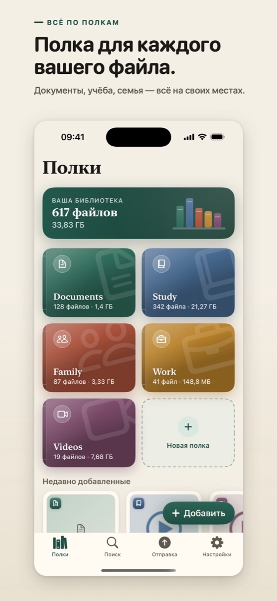
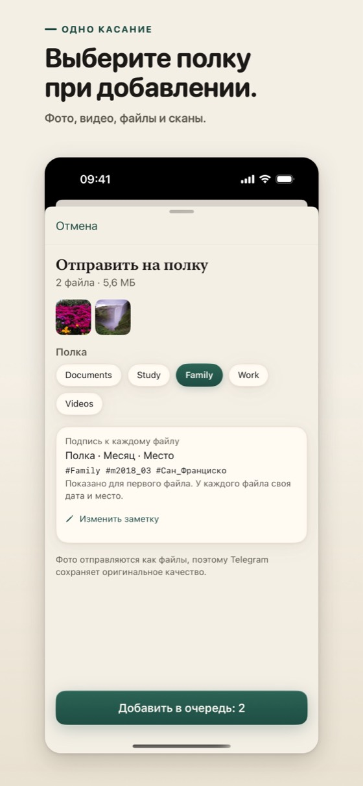

Ваши файлы разложены по полкам и хранятся в вашем собственном аккаунте Telegram
Cloud Shelves — приложение для iPhone, которое использует ваш собственный аккаунт Telegram как библиотеку файлов. Вы выбираете фото, видео и документы, приложение отправляет их копии в один канал в вашем аккаунте, а на телефоне показывает их разложенными по полкам.


Что умеет приложение
- Полки. Начните с готовых полок для документов, учёбы, семьи, работы и видео и добавьте свои, каждую со своим значком и цветом.
- Месяцы. Внутри полки файлы сгруппированы по месяцам. Поиск находит их по названию, полке или месяцу.
- Скан в PDF. Сканируйте бумажные документы камерой и храните их в виде PDF.
- Уже отправленные. Файлы, которые вы отправляли раньше, отмечены, чтобы вы не отправили их дважды.
- Видео больше 2 ГБ. Бесплатный аккаунт Telegram принимает файлы размером до 2 ГБ каждый. Слишком большое видео можно уменьшить, чтобы оно поместилось, а не резать на части.
- Новый телефон. Войдите снова, и ваши полки вернутся из канала.
Как это работает
- Перед входом приложение один раз спрашивает, можно ли создать в вашем аккаунте Telegram канал для ваших файлов.
- Вы входите через Telegram. Приложение находит этот канал или создаёт его: один канал, в котором есть только вы.
- Вы выбираете файлы и полку. Приложение отправляет копии по одной. Фото уходят как файлы, поэтому Telegram сохраняет оригинальное качество.
- Полка и месяц записываются в подпись к каждому файлу в виде хештегов, поэтому ваши файлы легко найти и в приложениях самого Telegram.
- Небольшой индексный файл, закреплённый в канале, позволяет приложению вернуть ваши полки на другом телефоне.
Честно об ограничениях
- Облачные чаты Telegram, включая этот канал, не имеют сквозного шифрования. Они используют шифрование «клиент-сервер» и хранятся в облаке Telegram в зашифрованном виде. Сохраняйте оригиналы. Подробнее о шифровании.
- На бесплатном аккаунте один файл может весить до 2 ГБ. Cloud Shelves работает с бесплатными аккаунтами и никогда не требует Telegram Premium.
- В документации Telegram для разработчиков сказано, что после передачи большого объёма данных скорость отправки и скачивания на бесплатных аккаунтах может быть ограничена. Когда Telegram просит приложение притормозить, оно ждёт, а затем продолжает.
- Отправка начинается, только когда вы добавляете файлы. Приложение не копирует вашу фотоплёнку само.
- Приложение отправляет копии. Оно никогда не перемещает и не удаляет файлы на вашем телефоне.
- Ко всему, что есть в вашем аккаунте, применяются условия использования и политика конфиденциальности Telegram.
Как оплачивается приложение
Cloud Shelves — бесплатное приложение с рекламой Google AdMob: баннер в конце экрана «Полки» и, не чаще двух раз в день, полноэкранная реклама после добавления файлов, но никогда в первый день. Одно короткое видео в настройках отключает рекламу на 24 часа. Покупок нет. В Политике конфиденциальности указано, что получает Google.
Cloud Shelves — независимое приложение. Оно не создано и не одобрено компанией Telegram.
Скоро в App Store
Бесплатно, с рекламой Google AdMob. Работает с бесплатным аккаунтом Telegram.
Статьи
- Какой лимит размера файла в Telegram?Бесплатный аккаунт Telegram принимает файлы до 2 ГБ, с Premium — до 4 ГБ. Точный лимит в байтах и что он значит для видео, подписей и скорости.
- Как отправить фото и видео без сжатияОтправляйте фото и видео в Telegram файлами, чтобы сохранить оригинальное качество. Пошаговая инструкция для приложения на iPhone и что при этом меняется.
- Telegram как облачное хранилище: честно о плюсах и минусахМожно ли хранить фото, видео и документы в Telegram? Что работает хорошо, на что обратить внимание и какие лимиты у бесплатного аккаунта, с источниками.
- Как упорядочить файлы в TelegramКак легко находить файлы в Telegram: один чат для файлов, подписи с хештегами, поиск по чату и вкладки с общими медиа. Работает на бесплатном аккаунте.
- Как уменьшить видео до 2 ГБВидео больше 2 ГБ не отправить с бесплатного аккаунта Telegram. Как размер зависит от битрейта и длительности и как его уменьшить: сжать, снизить разрешение, обрезать.
- Есть ли сквозное шифрование в облачных чатах Telegram?Облачные чаты Telegram, включая каналы и «Избранное», не имеют сквозного шифрования. У секретных чатов оно есть, но только на устройстве, где чат начат.
- «Избранное» или свой канал: что лучше для файлов?«Избранное» — это чат с самим собой, а канал, в котором есть только вы, — отдельная лента. Чем они отличаются для хранения файлов и когда что выбрать.